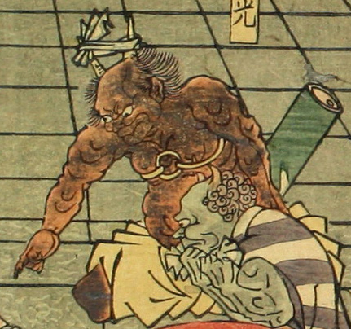

2本の角のある鬼。床を指差して何事か思案している。黄色い袴のようなものをはいており、裸の上半身の胸元には輪のようなものをつけている。2本の角を渡すように鉢巻をしている。背の後ろに竹筒が見える。肌は茶色である。
著作者：一栄斎芳艶（歌川芳艶）／出典：親書誌：U426_nichibunken_0086：丹波國大江山之圖；タンバノクニオオエヤマノズ／日付：2007／資源識別子：U426_nichibunken_0086_0003_0001
Copyright (c)2010- International Research Center for Japanese Studies, Kyoto, Japan. All rights reserved.